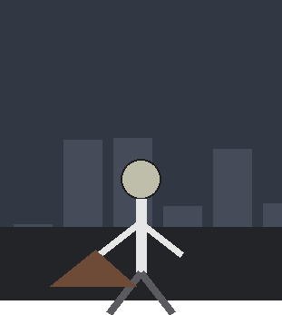
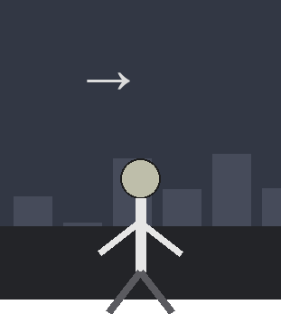
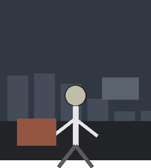
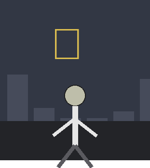

Endless runner 3D
Runner
Urbano
La ciudad no frena. Tú tampoco puedes.
Una avenida nocturna, obstáculos que aparecen sin aviso y un corredor que solo tiene una meta: llegar más lejos que su propio récord antes de quedarse sin vidas.
- 1000puntos para ganar
- 3vidas iniciales
- ↑↓saltar y agacharse

 El corredor
El corredorHistoria
Una ciudad que dejó de esperar
El juego transcurre en una metrópolis futurista que se deterioró con el tiempo. Sus calles son largas y están iluminadas por neones, señales y luces de edificios que nunca se apagan. Las barricadas, los contenedores y las estructuras de construcción bloquean el camino sin ningún orden aparente, y no existen atajos ni descansos.
En este escenario la velocidad es la única forma de moverse y el peligro llega sin avisar. Nada del entorno ayuda: cada obstáculo es una amenaza que el protagonista debe leer y resolver en una fracción de segundo.
Por qué corre
El corredor entra en la avenida y empieza a avanzar sin detenerse. Su motivación es personal y simple: llegar tan lejos como pueda, sobrevivir al caos urbano y superar su propia marca. No hay diálogos ni misiones. El arco narrativo se cuenta con la carrera misma, en la que cada partida termina en una nueva marca o en una caída.

Entra en escenaAparece en una avenida urbana y comienza a avanzar sin detenerse.

Se mueve por una metaDebe llegar lo más lejos posible y alcanzar un nuevo récord.

Supera el desafíoObstáculos bajos y altos aparecen al azar: saltar o agacharse.

Gana o caeSi sobrevive, supera su récord. Si pierde todas sus vidas, la carrera termina.
Personaje principal


El corredor urbano
Es el único protagonista y corre de forma continua por la avenida. El jugador no controla su velocidad: controla sus reflejos. Su silueta caricaturesca se reconoce al instante, incluso con el juego a máxima velocidad.
Rasgos distintivos
Cabello verde llamativo con vetas rojas, rostro expresivo, chaleco, camiseta oscura, pantalón cargo y botas. Su estilo es Cartoon 3D con proporciones exageradas, inspirado en personajes urbanos de videojuegos de carreras.
- Verde
- Chaleco
- Cargo
- Botas
Animaciones
- Correrestado por defecto
- Saltarcon ↑
- Agacharsecon ↓
- Moriral perder la última vida
Mecánicas y controles
Controles
- ↑Saltar
El corredor se eleva para pasar sobre obstáculos bajos.
- ↓Agacharse o deslizarse
Reduce su altura y su área de colisión para pasar bajo obstáculos altos.
- RReiniciar
Empieza una partida nueva al terminar.
Sin pulsar nada, el personaje sigue corriendo solo. Todo se juega con el teclado.
Reglas del juego
Barricadas, cajas y bloques de construcción. Se esquivan saltando.
Barras, estructuras suspendidas y señales elevadas. Se esquivan agachándose.
- El tipo de obstáculo se elige al azar y aparece a intervalos de tiempo variables.
- Cada choque quita una vida. No hay elementos recolectables.
- Los obstáculos que quedan atrás se eliminan de la escena.
- La puntuación sube con el tiempo que el jugador sobrevive.
- Victoria: alcanzar o superar la puntuación objetivo (1000).
- Derrota: perder las 3 vidas y ver el mensaje Juego Terminado con la puntuación final.
Datos del proyecto
- Género
- Endless runner 3D, de acción y reflejos
- Perspectiva
- Tercera persona
- Motor
- Unity, publicado en WebGL
- Estilo visual
- Cartoon 3D en ciudad nocturna con neones
- Público
- Jugadores de partidas cortas y de récords
- Puntuación
- Por tiempo de supervivencia
Jugar ahora
Requisitos mínimos
- Computadora con teclado físico.
- Chrome, Edge o Firefox actualizados, con WebGL 2.0 activo.
- Aceleración por hardware habilitada y 4 GB de memoria.
- Pantalla de 1280 × 720 o más.
Para jugar sin problemas
- La primera carga puede tardar unos segundos.
- Haz clic dentro del juego antes de usar las flechas.
- Si no responde, recarga o usa Abrir en otra pestaña.
- Cierra pestañas pesadas para mantener la fluidez.
Otro juego · Laberinto y persecución
SECTOR CERO / SUJETO 001La Ciudad Sangrienta
Te han visto. Encuentra la salida.
El mismo personaje, un nuevo desafío: el Sujeto 001 debe escapar del Sector Cero. Recorre un laberinto 3D con una dinámica inspirada en Pac-Man, recoge los núcleos de energía y evita a los bumeranes que te persiguen cuando te detectan.
No basta con sobrevivir: recoge los 36 núcleos y atraviesa la puerta superior cuando esté abierta para completar la misión.
Controles
Enter Empezar
↑←↓→ Mover al personaje
Entra al laberinto
Juega con teclado en una computadora. Haz clic dentro del juego para activar los controles. Para ver todo el laberinto, usa pantalla completa; si no carga aquí, ábrelo en otra pestaña.